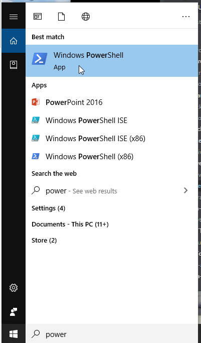
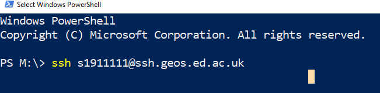
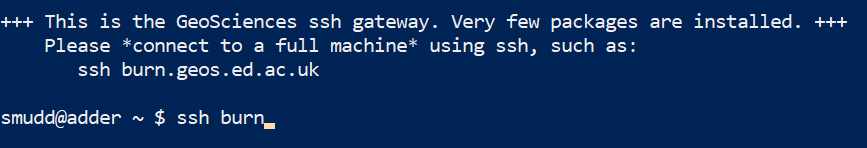
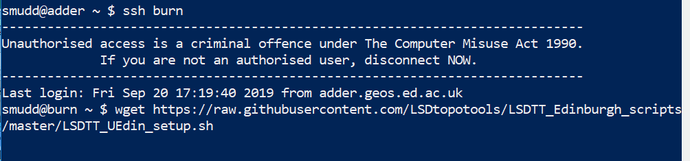
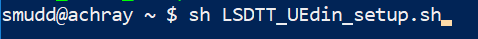

1. Introduction
Welcome to the installation instructions for LSDTopoTools, which is a collection of programs for analysing topography and modelling hydrology, landscape evolution and soil development.
1.1. Components of LSDTopoTools
LSDTopoTools has several components. These can be used in isolation or together.
-
LSDTopoTools command line tools: these run the core computational components of LSDTopoTools. These do most of the heavy lifting of LSDTopoTools.
-
lsdviztools a series of python scripts for visualising LSDTopoTools outputs. You can run these interactively but they also come with command line scripts.
-
lsdtopytools a python wrapper for LSDTopoTools so you get much of the functionality of the LSDTopoTools command line tools within the python environment.
1.2. Basic installation
If you are already familiar with Linux and/or Conda this should relatively painless.
-
If you are in a Linux or MacOS all you really need is Miniconda. You should use the python 3.8 version.
-
In windows don’t install conda for windows! Create an Ubuntu subsystem using these instructions and install conda there.
-
Once you have conda you can install the command line tools like this:
$ conda -c conda-forge install lsdtopotools -
Now you can use the command line tools!
1.3. lsdtopotools Python tools
-
You install lsdtopytools using conda
$ conda -c conda-forge install lsdtopytools -
You install lsdviztools using
pip:$ pip install lsdviztools -
These both have a bunch of dependencies so it is easier to use our docker container that has everything pre-installed. You can read about that below.
1.4. Menu of more detailed instructions
-
Installation using Docker. This works for MacOS and Linux well. It works for Windows 10 Enterprise edition. If you don’t have those operating systems you will need to use VirtualBox + Vagrant (see below).
-
Native installation on a Linux system. If your native operating system is Linux you can just install LSDTopoTools after getting all the libraries you need. The documents are made under the assumption that you use Ubuntu, but if you are a Linux user we are confident you’ll be able to port the instructions to your native system (usually this involves replacing
sudo apt-getwithsudo yum). -
University of Edinburgh installation. This software is developed at the University of Edinburgh and is used in teaching. We include instructions specific to students and staff at the University of Edinburgh for use on the School of GeoSciences servers.
2. Installing LSDTopoTools using Docker
As of October 2018, this is the preferred method to install LSDTopoTools. We have various containers on the docker hub which can be run with simple pull commands. The only software you need to run these is Docker.
2.1. Should I use Docker or Vagrant?
Short answer: If you have MacOS, Linux or Windows 10 Enterprise, use Docker. Otherwise use Vagrant.
Long answer: There are many, many, many articles comparing vagrant to docker. The docker setup is probably a bit simpler than the vagrant setup but (and this is a big but) it won’t work on a Windows machine unless you have Windows 10 Enterprise. It does work on any recent version of Linux and MacOS. If you have MacOS, native Linux or Windows 10 Enterprise you should consider using Docker since it involves fewer steps than our VirtualBox+Vagrant setup.
2.2. Installing Docker
Docker is software for creating and managing containers. These containers are not complete operating systems, like ones created using VirtualBox and Vagrant, so the boot time is quicker (usually almost straight away). Docker is perhaps simpler to use but does not work on every operating system.
To set up LSDTopoTools using Docker:
-
Download and install Docker Community Edition. Instructions on different operating systems are in the Docker documentation.
-
In Windows follow the instructions in the Docker documentation.
Firstly, this only works on Windows 10. And you need control of your computer, and you need to know what you are doing. If you have competent IT, ask them to do it. However, this will become MUCH EASIER in a few months when Windows releases its linux subsystem 2, which should allow native docker usage. See this blog post from Microsoft. -
On MacOS we recommend installing docker using brew:
brew cask install docker -
In Ubunutu you can use
$ sudo apt-get install docker-ce docker-ce-cli containerd.io -
In Debian use
$ sudo apt-get install docker-ce docker-ce-cli containerd.io -
See the docker website for instructions in your flavour of Linux
-
-
We will henceforth assume that you actually have a functioning version of Docker on your host machine. If you want more details about how to use docker, or getting it set up (particularly in Windows, in Linux and MacOS this is more straightforward), see our section on docker notes.
2.3. The four LSDTopoTools images
LSDTopoTools has four different containers. If you are an LSDTopoToools developer you will probably use all four. Most users will only use two of them. The four containers are:
-
lsdtt-alpine: This is the stripped-down, lightweight LSDTopoTools container. It uses a linux distrubution called the alpine linux distribution. For many users, this is the only container you will need. It is an 88 Mb download and when built, it is a bit under 300 Mb. -
lsdtt-pcl: A few of our routines (notably the terrace extraction routines and any routines using swath profiling) require something called the point cloud library (PCL). This library is ENORMOUS and a massive pain to install. It does everything thelsdtt-alpinecontainer does, and more. It is big: the download is 644 Mb and built it is over 2 Gb. However, if you need this one you can use it instead of thelsdtt-alpinecontainer. -
lsdtt-viz: This container installs all the python routines you need if you want to use our visualisation tools. Our tools require multiple python packages, meaning that this container is also quite large. If you use a GIS to look at our data, you won’t need this. However we do all our visualisation in python and have written lots of automation scripts, so if you think you will used LSDTopoTools routinely you might want to grab this dockerfile. -
lsdtt-docs: Our documentation is all written in asciidoc format, and processed with the extremely awesome asciidoctor. It runs in the Ruby programming language, and requires some stuff to be installed. We have a container for building the documentation so you don’t need to worry about installing the correct stuff. It is very unlikely you will need this unless you are an LSDTopoTools developer.
2.4. Before you do anything else: Set up a directory to share with docker containers.
When you run LSDTopoTools, or our visualisation routines, you will want to see the resulting files. Docker containers have self contained filesystems that cannot be read on your host operating system unless you tell docker to "share" the directories. These are called "volumes" in docker speak.
-
First, make a directory in your host operating system where you will put all the files associated with LSDTopoTools. I put mine in
C:\LSDTopoTools\ -
To share a directory in docker you use the
-vflag.-
Following the
-vflag you need to tell it which directories to share. -
The format is:
/Host/directory:/Container/directory
-
-
When you run docker (see below) you will need to ensure that the host directory name is the same as the directory you just created for LSDTopoTools.
2.5. First option: pull the docker images
-
Okay, this should be fairly easy.
-
If you want to run the full docker installation from the get go, simply run:
$ docker run --rm -it -v C:/LSDTopoTools:/LSDTopoTools lsdtopotools/lsdtt_pcl_dockerThis will pull the repo and run it at the same time.
This container is 663 Mb so if you just want to do some initial testing use the lightweight alpine version! -
If you want the lightweight version (but it can’t do floodplains and terraces) use:
$ docker run --rm -it -v C:/LSDTopoTools:/LSDTopoTools lsdtopotools/lsdtt_alpine_docker -
Either one of these commands will result in your command line terminating in the
#symbol. This indicates that you are insida a docker container. -
Once you are in one of the two docker containers, run the install script:
# Start_LSDTT.shThis script grabs the latest version of the code and builds the programs if you don’t have one that is up to date. It also ensure that the LSDTopoTools programs are in your path.
You will need to run Start_LSDTT.shevery time you start a new Docker session. -
If you want to follow our examples later in this documentation, you should also grab the example data:
# Get_LSDTT_example_data.shYou only need to perform this step the first time you start the LSDTopoTools container. -
You can now navigate to your data and start using LSDTopoTools. See our section on first analyses in LSDTopoTools.
-
If you ran
Get_LSDTT_example_data.shyou will now have a data directory/LSDTopoTools/data.
-
2.6. Second option: build the docker containers
| Unless you are a docker purist, please ignore this section and use option 1 instead. |
-
Create a folder where you are going to put files associated with docker. In the examples I will assume these are in
C:\LSDTopoTools\(this is a windows path, since the majority of organisations use the Windows operating system).-
If you have
giton your computer, you can clone our dockerfiles into this directory.$ git clone https://github.com/LSDtopotools/lsdtt_alpine_docker.git $ git clone https://github.com/LSDtopotools/lsdtt_pcl_docker.git -
If you don’t have
git, download and unzip the contents of the repository.
-
-
If you are only running LSDTopoTools for routine analysis and looking at the results in GIS software, you will only need one docker container.
-
We are only going to work with the
lsdtt-alpinecontainer. But the steps are basically the same for all the other containers. -
Start a terminal (MacOS or Linux) or powershell (Windows) with docker enabled.
-
Go into the directory inside you docker directory (in my case
C:\Docker\LSDTopoTools\) and go into thelsdtt_alpinedirectory. In windows, if your directory is called the same thing as my directory, you can get there with:PS> cd C:\Docker\LSDTopoTools\lsdtt_alpine_docker -
Build the docker container:
PS> docker build -t lsdtt-alpine . -
The
-tflag in docker stands for "tag". It is the name of the container. You could call it anything you want but all documentation henceforth assumes you have called itlsdtt-alpine.-
If you are building a different container, use a different tag, e.g.,
lsdtt-pclfor thelsdtt-pclcontainer.
-
-
Now you need to run this container:
$ docker run -it -v C:/LSDTopoTools:/LSDTopoTools lsdtt_alpine_docker -
After that, run the install script:
# Start_LSDTT.shThis script grabs the latest version of the code and builds the programs if you don’t have one that is up to date. It also ensure that the LSDTopoTools programs are in your path.
You will need to run Start_LSDTT.shevery time you start a new Docker session. -
If you want to follow our examples later in this documentation, you should also grab the example data:
# Get_LSDTT_example_data.shYou only need to perform this step the first time you start the LSDTopoTools container. -
You can now navigate to your data and start using LSDTopoTools. See our section on first analyses in LSDTopoTools.
-
If you ran
Get_LSDTT_example_data.shyou will now have a data directory/LSDTopoTools/data.
-
2.7. Some notes on Docker
You might want to read the docker documentation, but docker documentation is similar to documentation for the turbo encabulator. Below are some very simple notes to get you started.
2.7.1. Docker on Linux
After you install docker on Linux, you will need to add users to the docker permissions:
$ sudo usermod -a -G docker $USEROnce you have done this you will need to log out and log back in again.
2.7.2. Docker for Windows
I have not made any scientific study of this but most LSDTopoTools users are on Windows operating systems.
Firstly, you need to have Windows 10 Enterprise. It will not work otherwise. If you don’t have Windows 10 Enterprise but are on Windows you probably should use the Vagrant instructions. If you do have Windows 10 enterprise then you can download and install Docker for Windows CE. After you install this you will need to restart your computer not once but twice: once after intall and a second time to activate the hyper-V feature, which allows you to have 64 bit guest operating systems.
Second, if you have that and have it installed, you also need to add yourself to the docker-users group. To do that, do this (instructions from here: https://github.com/docker/for-win/issues/868):
-
Logon to Windows as Administrator
-
Go to Windows Administrator Tools
-
Look for Windows Computer Management and click on it.
-
Or you can skip steps 1, right mouse clicking Computer Management, go to more, and select run as administrator and provide Administrator password.
-
Double click docker-users group and add your account as member.
-
Also add your account to Hyper-V Administrator. This was added when you installed docker for Windows.
-
Log off from Windows and log back on.
-
Click on Windows icon on bottom left and start Docker for Windows. This will start docker windows service.
-
Start Windows Powershell and type docker --version. It will show Docker version 17.09.1-ce, build 19e2cf6. This is the latest version.
2.7.3. Building a base image
By the time these notes go online, there should be a functioning docker image that you can download from the docker hub. The instructions will be clear and users can just start running LSDTopoTools from within docker. These notes exists as something of a history or cheat sheet of how we made the base image.
Before we do anything, you should look at some notes about running a functioning image of ubuntu: http://phusion.github.io/baseimage-docker/
I have no idea if that stuff is important! But we will try to test images that both include and don’t incude a fully formed startup environment.
The other big issue with docker is the volume syncing. This is more difficult to understand syncing in vagrant.
A simple docker image
So basically for LSDTopoTools functionality we might want a few different base images:
-
An image just for the c++ code.
-
An image just for the python scripts.
-
An image just for building documentation.
-
An image with everything installed.
The reason why we might separate the first three images is because the python image will be HUGE whereas the LSDTopoTools source code is small. So people might want to be offered a slimm version.
Lets start with a very simple python image. The docker documentation for getting you started up is not so useful because they are written to get you running an app in the docker box. For our purposes we want:
-
To log into to the docker container via ssh or access it as though you have a little linux box running
-
To be able to access you file system (we don’t want to be having to ftp files in an out of the container each time or worse yet losing all our work when the docker session ends).
For python, we could go with a full python build but that results in very large containers (over a GB). We will follow advice for a minimal python installation. For this we will use the Alpine base box.
-
First, create a directory that will contain the files you need. I’ll call it
python_test. -
Go into this directory. You will keep something called a
dockerfilein this directory. It has instructions for what stuff is included in the container. We will start with an incredibly simple one. Create the follwoing textfile, calleddockerfile:FROM python:3.6-alpine COPY . /app WORKDIR /app -
Before we do anything we need to
buildthe container. You build it with some name, like:$ docker build -t chumbucket .In this command, the
-ttells docker to tag the container, thechumbucketgives the container its tag, and the.means that you want to call theDockerfilefrom this directory. -
This downloads some stuff and then hopefully tells you the container is sucessfully built. You can look at it with
docker image ls. -
You need to actually run the image if you want to do anything with it:
$ docker run -it chumbucket sh -
The
-itmeansinteractiveandtagand you give it the tag. You then tell it to run the shell (sh). To get out of the shell simply typectrl-d. -
This gets you into a python container, and in addition it has a (very old version of) pip installed. It breaks if you try to install even simple things like pandas. This makes it totally unusable so we are going to have to add some stuff to the docker file. Unfortunately the alpine distro has all sorts of fundamental problems, for example you can’t install scipy.
A slightly more complicated python image
Okay, that container only has a very simple version of python on it. You can then install pip and try to get some packages working, but this is not always straightforward. Your friendly LSDTopoTools developers prefer the miniconda environment, so we are going to build a container on top of the miniconda3 image.
-
The dockerfile to start looks like this:
FROM conda/miniconda3 COPY . /app WORKDIR /app -
Again, we need to build this container in order to use it:
$ docker build -t chumbucket2 . -
We can see what images are available with the call
$ docker images -a -
You will notice the conda image is 228 MB vs the 78.7 MB: the conda version has more bells and whistles involved in getting miniconda to work. But the end result is that you can install things using conda. Let’s update the image with a conda install. Here is the dockerfile:
# Use the miniconda distribution. FROM conda/miniconda3 # Add the app directory and set app to the working directory COPY . /app WORKDIR /app # Now add some conda packages RUN conda install -y numpy -
And we can build this once more (with the same build call so we don’t create a totally new container):
$ docker build -t chumbucket2 . -
Now we can open this container in the interactive mode:
$ docker run -it chumbucket2 sh -
If you run python inside this container and then
import numpy as npyou can see that it has been installed. -
From here you should be able to see that we can install all sorts of stuff from the dockerfile using the
RUN conda installcommand.
Mounting volumes in Docker
-
What we really want is exchange of files between your host operating system and your docker container.
-
You might start by reading about docker volumes. But like most Docker documenattion that is a bit impenetrable so you might move on to some plain english summaries: summary 1 and summary 2.
-
The upshot of this is that you don’t really want a docker volume container, but rather you want to link your docker container to your host file system.
-
On MacOS and Linux this works automatically, but on Windows 10 you need to activate it. Right click on the docker icon in the system tray, go to Settings and then to Shared Drives and activate drive sharing.
-
Once you have done this you can activate the drive sharing with the
-vflag in a docker run command (see below).
An LSDMappingTools container
-
Okay, lets make a container for LSDMappingTools.
-
The dockerfile looks like this:
# This is the LSDMappingTools dockerfile. It is currently set up to install the # latest versions of the various required python packages # To run this you will need to connect it to your host directories if you want to be able to retrieve # your figures and get data in and out of the container. # On windows you need to allow docker access to the host drive # Right click on the docker icon in your system tray # Then select "settings" # Then "Shared Drives" and activate the drive you want # In MacOS and Linux this is automatically set up. # After you build the container # e.g. # docker build -t lsdmt . # # Then you need to run it with the volume attached # e.g. # docker run C:/Docker_containers/python_containers/LSDMappingTools:/LSDTopoTools/LSDMappingTools lsdmt bash # Use the miniconda distribution. FROM conda/miniconda3 LABEL MAINTAINERS = "Simon Marius Mudd <simon.m.mudd@ed.ac.uk>, Fiona J Clubb <clubb@uni-potsdam.de>" # Set LSDTopoTools to be the working directory # This will create a directory in the root of the container. # When you start the container you will be placed in this directory. WORKDIR /LSDTopoTools # Now add some conda packages RUN conda config --add channels conda-forge RUN conda install -y numpy matplotlib pandas scipy RUN conda install -y gdal shapely fiona rasterio pyproj RUN conda install -c conda-forge descartesThis takes a very long time to set up! -
This doesn’t include the actual python scripts! You need to copy them into a directory where docker can access them (on my machine this means withing the C: drive) and then add them using a volume command:
-
First build the container:
$ docker build -t lsdmt . -
Then run the container in interactive mode with the volume attached:
$ docker run -it -v C:/Docker_containers/python_containers/python_test1/LSDMappingTools:/LSDTopoTools/LSDMappingTools lsdmt bash -
Note that this container has many python packages so it is rather larege: nearly 4GB (to see, type
docker ps -as).
An LSD Documentation container
-
We use asciidoctor for our documentation. I am pleased to say that there is a dockerfile for asciidoctor.
-
Simply copy the asciidoctor dockerfile and add two lines:
awesome_print \ bundler \these come after the line
tile \on line 55. -
Now build the container
$ docker built -t asc . -
Then open that container up linking to the proper directory. I use:
$ docker run -it -v C:/Docker_containers/ruby_containers/LSDTT_documentation/master:/documents/LSDTT_documents asc bash -
You can find this dockerfile within the LSDTT Documentation repository.
-
When that is running, go into the documentation directory and run our python script:
# cd LSDTT_documentation # python compile_LSDTTDocs.py -
The resulting website will be in the directory
html_build.
The LSDTT core code container
-
We actually have two containers for this since a subset of our code uses PCL which is massive.
-
The simpler version, used in most of our code, is the following:
# Pull base image. FROM ubuntu:18.10 RUN apt-get update RUN apt-get install -y build-essential git gdal-bin python-gdal libfftw3-dev cmake WORKDIR /LSDTopoTools -
We can also use an Alpine linux version, which is much smaller:
FROM alpine MAINTAINER Simon Mudd (simon.m.mudd@ed.ac.uk) and Fiona Clubb (clubb@uni-potsdam.de) # install essential packages RUN apk upgrade -U && \ apk update && \ apk add --virtual build-dependencies build-base gcc wget git && \ apk add --repository http://dl-cdn.alpinelinux.org/alpine/edge/main libressl2.7-libcrypto && \ apk add gdal --update-cache --repository http://dl-cdn.alpinelinux.org/alpine/edge/testing && \ apk add fftw-dev cmake && \ rm -rf /var/cache/apk/* && \ rm -rf /tmp/* # update to avoid weird apk error RUN apk update # clone LSDTT repo WORKDIR /LSDTopoTools/ -
After we build this container we can run it with:
$ docker run -it -v C:/Docker/cpp_containers/LSDTopoTools:/LSDTopoTools/ lsdtt-alpine
The LSDTT PCL container
Some of our routines need the [Point Cloud Library]. This is a HUGE library that needs millions of additional bits of software. The resulting container is enormous, and takes an age to build so you should only use this if you need the PCL versions of LSDTopoTools.
One quite annoying thing is that for anything later than Ubuntu 14 you need to build PCL from source. This takes a long time. The whole installation process takes an age. Sorry.
This is the dockerfile:
# Pull base image.
FROM ubuntu:16.04
# These are the basic build tools
RUN apt-get update
RUN apt-get install -y build-essential git gdal-bin python-gdal libfftw3-dev cmake
# And this is the point cloud library
# install pcl
RUN apt-get install -y libpcl-dev
# We need this as well
RUN apt-get install -y libproj-dev
WORKDIR /LSDTopoTools3. Installing natively on a Linux system
ONLY DO THIS IF YOU ARE A DEVELOPER!! If you just want to use the code follow the basic instructions.
The compute power of LSDTopoTools is all found within the LSDTopoTools command line tools, which you can install using miniconda:
$ conda -c conda-forge lsdtopotoolsThe below instructions are for developers who work with the source code. Unless your name is Simon, Fiona, Stuart, Boris, David, Marina, or Martin and are now or formerly associated with the University of Edinburgh’s Land Surface Dynamics group it is highly unlikely you will need any of this.
3.1. Get the associated software you need
-
Start a terminal session.
-
Install some essential softare (we will use Ubuntu installation, you need to modify these if you are on another version of Linux). This assumes you have the GNU c++ tools:
$ sudo apt-get install -y git $ sudo apt-get install -y gdal-bin $ sudo apt-get install -y python-gdal $ sudo apt-get install -y libfftw3-dev $ sudo apt-get install -y cmake
3.2. Option 1: Use the script
We made a script for Linux users. It does the following:
-
Makes an LSDTopoTools directory
-
Clones and compiles the code
-
Downloads the example data
-
Spawns a bash shell that knows where the command line tools are.
To use it:
-
Grab the script
$ wget https://raw.githubusercontent.com/LSDtopotools/LSDTT_Edinburgh_scripts/master/LSDTT_native_linux_setup.sh -
Run the script
$ sh LSDTT_native_linux_setup.sh -
You will need to tell this script where you want to install LSDTopoTools.
-
The first time you run this it will take a while to compile and get all the files. But you can run it thereafter for any terminal session and it will add the actually LSDTopoTools programs to your
$PATHfor that session. -
If you don’t want to bother with the script each time, we suggest adding the location of the LSDTopoTools prgrams to your
$PATHin your.bashrcfile. If you don’t know what that previous sentence means, just use the script.
3.3. Option 2: Do it by hand
3.3.1. Get the LSDTopoTools2 code and install
-
You probably should make a directory where you keep everything associated with LSDTopoTools. A suggested name for this directory is LSDTopoTools: it says what it does on the tin. Go into that directory once you have created it.
-
Next, clone the LSDTopoTools2 repository here:
$ git clone https://github.com/LSDtopotools/LSDTopoTools2.git -
Go into that new directory:
$ cd LSDTopoTools2 -
Run the setup tool
$ sh lsdtt2_setup.sh -
You can now navigate to your data and start using LSDTopoTools. See our section on first analyses in LSDTopoTools.
3.3.2. Starting an LSDTopoTools2 session after your first installation
-
Whenever you return to run an LSDTopoTools2 session, you will need to tell the computer where your program files are. You cave two options:
-
Run
sh lsdtt2_setup.shin the LSDTopoTools2 directory. This gets the latest version of the software, recompiles, and points your session to the program files. -
Run
sh lsdtt2_terminal.shin the LSDTopoTools2 directory. This just points your session to the program files.
-
-
You must do one of those two things otherwise your computer will not know where the program files are.
-
As an alternative, you can go into yor
.bashrcfile and add the/path/to/LSDTopoTools2/bindirectory to your$PATH. You will need to change the full path to reflect your own directory system. If you don’t know what a.bashrcfile is you are probably better off running thelsdtt2_terminal.shscript.
3.3.3. Getting the example data
-
Create a data directory. The documentation assumes this directory structure:
| Your home directory (native linx) or the root directory (docker)
--|LSDTopoTools
----| LSDTopoTools2
------| subdirectories with source code and programs
----| data
------| subdirectories with different projects
----| Other LSDTopoTools directories (e.g., LSDMappingTools, LSDTT_documentation) -
Go into the data directory and grab the example data from github, then unzip and clean the zip file:
$ cd data $ wget https://github.com/LSDtopotools/ExampleTopoDatasets/archive/master.zip $ unzip master.zip $ mv ./ExampleTopoDatasets-master ./ExampleTopoDatasets $ rm master.zip -
You should now have the example data for further examples.
3.4. Installing LSDTopoTools using Windows Subsystem for Linux
Some users have had difficulties getting Docker to install on Windows as it can require changing a setting in the BIOS. If this is the case, you can try to install the code natively using Windows Subsystem for Linux. This is a piece of software from Microsoft that allows you to run a small Linux environment (in our case Ubuntu) from your Windows operating system. We will download this software from the Microsoft Store, which should be preinstalled on any Windows 10 system.
-
Firstly, download the Ubuntu app from Microsoft Store. If you can’t find it, then you can also get it from this link. You might need to restart your computer as prompted following this step.
| The download here is around ~200 Mb, so make sure you have enough space on your system for this. You don’t need to register to the store in order to download the app. |
-
Launch the Ubuntu app by clicking on it from the Start menu. You will then be prompted to create a new user account and password - you can choose whatever you want for this, but make sure you remember it! The password is important for installing packages in the next steps.
-
The first time you launch, make sure you update and upgrade your standard packages by typing:
$ sudo apt update && sudo apt upgrade -
Now install the dependencies for LSDTopoTools:
$ sudo apt install -y build-essential git gdal-bin python-gdal libfftw3-dev cmake -
Then make a new directory for the LSDTopoTools code and download it from GitHub:
$ mkdir LSDTopoTools && cd LSDTopoTools $ git clone https://github.com/LSDtopotools/LSDTopoTools2.git -
This will create a directory called
~/LSDTopoTools/LSDTopoTools2in your home. Navigate to this directory and run the start up script:$ cd LSDTopoTools2 $ bash lsdtt2_setup.sh -
This script will set up the code: we then need one more command to add the binary to your local path. First run:
$ cd bin $ pwd -
This will print out a directory path. Copy this directory path, let’s call it
/path/to/your/binfor the sake of this example, and run:$ export PATH=/path/to/your/bin:$PATH -
This will link the
binfolder to the system path and make the code executable from anywhere in the Linux subsystem.
3.4.1. Accessing data from Windows
Once installed in the linux subsystem, Microsoft strongly warns against accessing to Ubuntu file system from windows as it can damaged it quite easily. However the opposite is fairly easy: the easiest way to do that is to store data in your C drive, accessible from the linux subsystem with:
$ cd /mnt/c/4. Installing LSDTopoTools at the University of Edinburgh.
These instructions are for students and staff within the School of GeoSciences at the University of Edinburgh.
4.1. Mapping your network drive
You will need access to your data on the network drive to use LSDTopoTools. You only need to do this one in any computer lab (and possibly only once ever):
-
Open a file explorer window and under computer select the "University drive":
 Figure 1. The university drive
Figure 1. The university drive -
Then go into the Science and Engineering folder ("SCE"):
 Figure 2. The science and engineering folder
Figure 2. The science and engineering folder -
Then into the GeoSciences folder ("GEOS"):
 Figure 3. The geosciences folder
Figure 3. The geosciences folder -
Then into the Drive Mapping folder ("drive_mapping"):
Figure 4. The drive mapping folder -
And finally double click the shortcut "Access Netdata":
Figure 5. The access netdata shortcut
4.2. Getting on to our servers with with ssh in a powershell window
-
In the windows search bar, type "powershell" and start a windows powershell.
Figure 6. Start powershell -
Type
ssh UUN@ssh.geos.ed.ac.uk.Figure 7. Go onto a server using the ssh command. You must use your own university username (UUN)! -
It will ask you a yes/no question about adding a key. Type
yes. -
Enter your EASE password. and enter your password. UUN is your university user name.
-
This puts you into the university ssh server, which is slow. Move into a better one by typing
ssh burn.You MUST move servers since the GeoSciences ssh server is very old and cannot run the software. Figure 8. Go onto burn. You could also tryachrayAlternatives to this method are programs called MobaXterm, putty, or secure shell client. But basically in all these you need to connect to the server
UUN@ssh.geos.ed.ac.ukand then enter your password.
4.3. Downloading and running the setup script
-
Navigate to your home directory
$ cd ~ -
Get the setup script from the internet
$ wget https://raw.githubusercontent.com/LSDtopotools/LSDTT_Edinburgh_scripts/master/LSDTT_UEdin_setup.shFigure 9. Grab the startup script from the internet usingwget. Brief note: for downloading large files,wgetis much faster than downloading files through a browser. -
Now run the script:
$ sh LSDTT_UEdin_setup.shFigure 10. Run the script. -
Follow the prompts.
| Every time you start a new session, you will need to run this setup script. The second time you run it, it will not set up LSDTopoTools, but it will check the software for updates and it will also tell your computer where the actual programs are. |
4.3.1. Excruciatingly detailed information about what the script does (only read this if you are an enthusiast that must know how everything works)
| This is what the setup script does. You don’t need to do this if you have run the script! It remains here for reference. |
-
For staff and research students, their largest data storage is in their datastore. Undergraduates and taught master’s stuents don’t have access to this, unfortunately. If you tell the script you want things in your home directory, the script will skip this.
-
Go into your T: drive by entering:
cd /exports/csce/datastore/geos/users/UUN -
Imagine having to type this every time you go into the servers. It is very annoying. You can cut that step out by making a symbolic link.
-
In linux you can always navigate to your home directory using:
$ cd ~ -
You make a link using the
lncommand:$ ln -s /exports/csce/datastore/geos/users/UUN MyDataStoreYou need to replace UUNabove with your university user name.You don’t have to call the link MyDataStore, you can call it whatever you like. But try to remember what you called it. -
Once you do that, you can navigate into your network drive in Linux with the commands:
$ cd ~ $ cd MyDataStore
Don’t be messy
-
You can organise your directories however you want, but I find it is easier to keep everything contained in a single LSDTopoTools directory.
-
Go into your network drive (see above).
-
I suggest making a directory called
LSDTopoTools(you can usemkdir LSDTopoTools). -
If you want to be clever, you can make an additional link to this new directory:
$ cd ~ $ ln -s /exports/csce/datastore/geos/users/UUN/LSDTopoTools LSDTT_Directory $ cd LSDTT_DirectoryYou need to replace UUNabove with your university user name. -
If you do that, whenever you want to go into your *LSDTopoTools directory, you just enter this:
$ cd ~ $ cd LSDTT_Directory -
Do that in order to follow the next steps.
-
Inside this directory you can put the source code, any data or projects, and the python visualisation code. But in the next step we will just get the source code in set up the main LSDTopoTools programs.
Cloning the LSDTopoTools2 repository
LSDTopoTools2, which has the main analysis programs, lives in a github repository and you use a program names git to get it. Don’t worry, this is easy.
-
Type (or copy and paste):
git clone https://github.com/LSDtopotools/LSDTopoTools2.git -
It will download some stuff. Now you need to build the software.
Building the software
-
Type:
sh lsdtt2_setup.sh -
Wait a bit until it finishes. It should take a minute or two.
-
You can now navigate to your data and start using LSDTopoTools. See our section on first analyses in LSDTopoTools.
Starting an LSDTopoTools2 session after your first installation
-
Whenever you return to run an LSDTopoTools2 session, you will need to tell the computer where your program files are. You have two options:
-
Run
sh lsdtt2_setup.shin the LSDTopoTools2 directory. This gets the latest version of the software, recompiles, and points your session to the program files. -
Run
sh lsdtt2_terminal.shin the LSDTopoTools2 directory. This just points your session to the program files.
-
-
You must do one of those two things otherwise your computer will not know where the program files are.
-
As an alternative, you can go into yor
.bashrcfile and add the/path/to/LSDTopoTools2/bindirectory to your$PATH. You will need to change the full path to reflect your own directory system. If you don’t know what a.bashrcfile is you are probably better off running thelsdtt2_terminal.shscript.
Getting the example data
-
Create a data directory. The documentation assumes this directory structure:
| Your home directory (native linx) or the root directory (docker)
--|LSDTopoTools
----| LSDTopoTools2
------| subdirectories with source code and programs
----| data
------| subdirectories with different projects
----| Other LSDTopoTools directories (e.g., LSDMappingTools, LSDTT_documentation) -
So, if you don’t have a data directory, make one. Again, we suggest putting this in your LSDTopoTools directory. Go into your LSDTopoTools directory (see instructions above):
$ mkdir data -
Go into the data directory and grab the example data from github, then unzip and clean the zip file:
-
If you are an undergraduate, the script will grab the small samples:
$ cd data $ wget https://github.com/LSDtopotools/SmallExampleTopoDatasets/archive/master.zip $ unzip master.zip $ mv ./SmallExampleTopoDatasets-master ./ExampleTopoDatasets $ rm master.zip -
If you have a datastore directory (e.g., are a PGR student or staff) it will get the large example data (since you have more space):
$ cd data $ wget https://github.com/LSDtopotools/ExampleTopoDatasets/archive/master.zip $ unzip master.zip $ mv ./ExampleTopoDatasets-master ./ExampleTopoDatasets $ rm master.zip
-
-
You should now have the example data that is used in the rest of this documentation.
5. Extra dependencies for swaths and point clouds
Some of our tools require the point cloud library. To get this working you need a few different utilities and libraries (take a deep breath):
-
The
cmakeutility. This is likemakebut is required for our tools that examine point clouds, since it is required by something called the point cloud library. -
pcl: The Point Cloud Library.
-
libLAS: a library for working with LAS format data.
Our Vagrant installation installs these automatically. The docker installation (since it is 3rd party) does not. However you can install on an Ubuntu system (and the Docker installation is Ubuntu) using the following instructions.
5.1. Install the Point Cloud Library
If you are using an older version of ubuntu there is a package. Newer versions of Ubuntu don’t have it, so you will unfortunately need to install by hand.
5.1.1. Ubuntu 14 and 12
This is relatively painless (we hope):
$ sudo add-apt-repository ppa:v-launchpad-jochen-sprickerhof-de/pcl
$ sudo apt-get update
$ sudo apt-get install libpcl-all5.1.2. Ubuntu 16.04 LTS
First, try this. It is possible it will only work on 64 bit systems:
$ sudo apt-get update
$ sudo apt-get install libpcl-devIf that doesn’t work you need to install from source. I am very sorry about this.
To install the pcl library from source you use the following steps:
| This will take at least an hour!! It will also download an insane amount of stuff onto your machine. You must ensure that you follow the steps in the correct order. |
Install oracle-java8-jdk:
$ sudo add-apt-repository -y ppa:webupd8team/java && sudo apt update && sudo apt -y install oracle-java8-installerInstall various dependencies and pre-requisites:
$ sudo apt -y install g++ cmake cmake-gui doxygen mpi-default-dev openmpi-bin openmpi-common libusb-1.0-0-dev libqhull* libusb-dev libgtest-dev
$ sudo apt -y install git-core freeglut3-dev pkg-config build-essential libxmu-dev libxi-dev libphonon-dev libphonon-dev phonon-backend-gstreamer
$ sudo apt -y install phonon-backend-vlc graphviz mono-complete qt-sdk libflann-dev libflann1.8 libboost1.58-all-devInstall the eigen linear algebra package:
$ cd ~/Downloads
$ wget http://launchpadlibrarian.net/209530212/libeigen3-dev_3.2.5-4_all.deb
$ sudo dpkg -i libeigen3-dev_3.2.5-4_all.deb
$ sudo apt-mark hold libeigen3-devInstall VTK (this has some plotting functionality, this takes AGES.):
$ wget http://www.vtk.org/files/release/7.1/VTK-7.1.0.tar.gz
$ tar -xf VTK-7.1.0.tar.gz
$ cd VTK-7.1.0 && mkdir build && cd build
$ cmake ..
$ make
$ sudo make installNow install the Point Cloud Library v1.8:
$ cd ~/Downloads
$ wget https://github.com/PointCloudLibrary/pcl/archive/pcl-1.8.0.tar.gz
$ tar -xf pcl-1.8.0.tar.gz
$ cd pcl-pcl-1.8.0 && mkdir build && cd build
$ cmake ..
$ make
$ sudo make installDo some clean up:
$ cd ~/Downloads
$ rm libeigen3-dev_3.2.5-4_all.deb VTK-7.1.0.tar.gz pcl-1.8.0.tar.gz
$ sudo rm -r VTK-7.1.0 pcl-pcl-1.8.0You should now have pcl installed on your system! You can do a small test of the installation if you want to:
$ cd ~
$ mkdir pcl-test && cd pcl-testCreate a CMakeLists.txt file and save this in the directory pcl-test:
cmake_minimum_required(VERSION 2.8 FATAL_ERROR)
project(pcl-test)
find_package(PCL 1.2 REQUIRED)
include_directories(${PCL_INCLUDE_DIRS})
link_directories(${PCL_LIBRARY_DIRS})
add_definitions(${PCL_DEFINITIONS})
add_executable(pcl-test main.cpp)
target_link_libraries(pcl-test ${PCL_LIBRARIES})
SET(COMPILE_FLAGS "-std=c++11")
add_definitions(${COMPILE_FLAGS})
Create a file and call it main.cpp:
#include <iostream>
int main() {
std::cout << "hello, world!" << std::endl;
return (0);
}
Compile the cpp file and then test it :
$ mkdir build && cd build
$ cmake ..
$ make
$ ./pcl-testOutput should be hello, world!
5.2. Extra libraries for the floodplain and terrace extraction
| As of January 2018 liblas does not compile on our vagrant server since liblas3 is not available for Ubuntu 12. We have updated the vagrantfiles to Ubuntu 14 so you should use the new vagrantfiles (this will require downloading a new vagrant box if you were using the old vagrantfile). We don’t use Ubuntu 16 since it is such an incredible pain to install the point cloud library on it. |
You might find you need to install a couple of other libraries for the floodplain and terrace drivers to compile properly. If you are using Ubuntu, you can do this using the following commands:
$ sudo apt-get update
$ sudo apt-get install libgoetiff-dev
$ sudo apt-get install liblas-dev6. Installing the LSDTopoTools python toolchain
LSDTopoTools is written in C++ but also includes a number of automation and visualisation rountines written in python.
Because LSDTopoTools handles primarily spatial data, a number of python packages for handling spatial data are needed in the LSDTopoTools python toolchain. We have attempted to make setting up this toolchain as painless as possible using miniconda and conda environments.
Please see the chapter on LSDTopoTools visualisation for instructions on how to install the LSDTopoTools python toolchain.
The preferred way to install LSDTopoTools is via a Docker container (see previous sections), but because our python tools use a large number of python packages we have a separate container for these tools.
7. Get a text editor!
A text editor isn’t part of LSDTopoTools but you need one to do anything. You will need to modify parameter files and you might even get to the stage of opening Pass:[c++] or Python scripts and editing them so you will need an editor.
If you are Linux native you probably chortle superiorly if you learn someone doesn’t use vi to modify files, but most students have usually only interacted with text files via a word processor.
A word processor (e.g., Word, or whatever fasionable software is on your fruit-based computer) will not work to modify code: these convert your text into binary files and add a bunch of formatting.
You need to work with raw ascii files, and for that you need a text editor. We like these:
-
Brackets is a multi platform text editor (it works on all operating systems) and is free. It has nice file navigation. This documentation was written using Brackets.
-
Atom is another multi platform editor. Similar to Brackets. Also free.
-
PSPad is a freeware text editor (it will ask you occasionally for a donation). I quite like it for Pass:[c++] code and other code since it has a quite nice built-in function navigator. It only works on Windows.